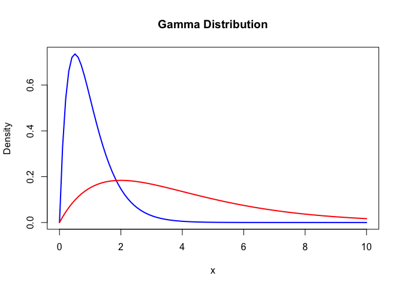
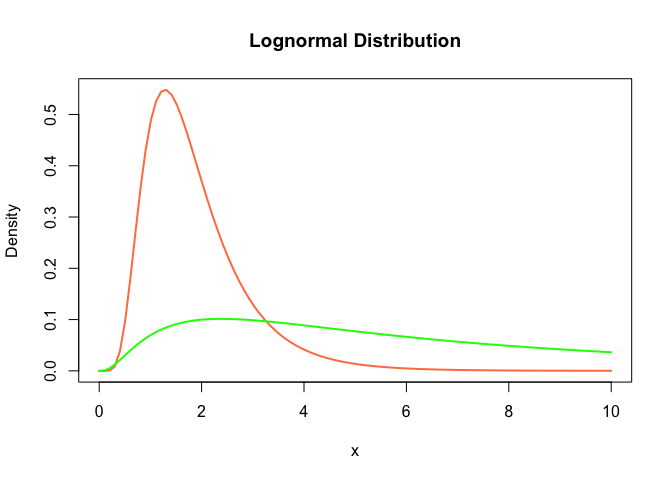

![]()


epidemiological parameters, reporting guidelines
Epidemiological parameters are a necessity in understanding the spread of infectious disease; from the rate of transmission, to severity, to serology, these parameters underline our ability to quantify and respond to disease outbreaks. The estimation of epidemiological parameters has a long history in epidemiology and the models and methods applied have become more complex; and with this complexity comes the numerous ways parameters can be reported in the literature. Here we provide guidance on how to clearly communicate estimated epidemiological parameters, to maximise their secondary use and minimise possible human errors that come with extracting parameters from the literature and applying them in their own epidemiological analysis. Our aim is for future work that reports epidemiological parameters to be consistent, reproducible and comparable.
Epidemiological parameters are quantities that characterise the spread of infectious diseases, their epidemiological outcomes and temporal information on dynamics of disease progression and transmission (Cori and Kucharski 2024). They are critical to understand epidemic and pandemic dynamics and respond accordingly (Polonsky et al. 2019). Most epidemiological parameters take the form of distributions because there is inherent variability in the epidemiological characteristics being measured. An illustration is the delay from infection to symptom onset. The variability of individuals in immune response and variability of the infectious agent in pathology are two ways, among many others, that lead to some individuals having shorter time delay between infection and onset of symptoms. Due to most epidemiological parameters being described by distributional forms they are estimated by fitting distributions to epidemiological data on cases or contacts.
It has become general practice that when epidemiological parameters are required, either for analyses of epidemiological case data or to make policy decisions like quarantine duration, that the literature is searched to find a suitable peer-reviewed publication reporting the parameter needed. However, this process has several limitations. The time requirement to search through papers to find the highest quality epidemiological parameter means that in time-limited scenarios, for example early in an outbreak when the situation is evolving rapidly and new data is continually gathered, a suboptimal parameter set may be extracted and used. This has lead to previous ad hoc reviews of epidemiological parameters for specific pathogens (e.g. Ebola (Van Kerkhove et al. 2015)). The choice of parameter is also likely to be somewhat subjective without a clear quality assurance framework to evaluate and compare different parameter estimates. The manual extraction of copying and pasting parameters out of the literature comes with the risk of discrepancies entering the calculations.
Epidemiological parameters have been reported for many diseases and the data used to infer parameter estimates and the methods of inference vary.
Efforts to compile a centralised database of epidemiological parameters have highlighted the variability and ambiguity in parameter reporting which can lead to uncertainty around what is being reported and how these epidemiological parameters can be applied in other epidemiological analyses [Cuomo-Dannenburg et al. (2024); doohanLassaFeverOutbreaks2024; Nash et al. (2024)].
This paper was motivated by several research groups independently attempting to compile a comprehensive library of epidemiological parameters which could serve as a public resource to easily search, filter and extract parameters. These groups gathered for a workshop convened by the World Health Organisation (WHO) Collaboratory in Spring 2024, in which a Global Repository of Epidemiological Parameters (GREP) was discussed, as well as ideas for guidance on reporting epidemiological parameters. The guidelines and examples of incorrect reporting and use were subsequently further developed and resulted in this paper.
This guidance on reporting of epidemiological parameters does not cover or advise on estimation methods. Our focus is on the reporting of parameters post-inference and the benefits of reporting standardisation on the reuse of epidemiological parameters by those involved in epidemic or humanitarian response. For guidance on methodologies to use when inferring delay distributions see Park et al. (2024) and Charniga et al. (2024).
Here we focus on the bias caused by badly reported epidemiological parameters on simple epidemic methods, sometimes referred to as outbreak analytics (sensu Polonsky et al. 2019), to showcase the erroneous conclusions that can arise when using parameter estimates from the literature. The biases produce here will likely extrapolate to more complex epidemiologilogical modelling. Reporting guidelines can ensure standardised reporting becomes more commonplace, which can make it easier to review, summarise and aggregate epidemiological parameters. We hope that this paper, alongside other works on reporting best practises in epidemiology (pollettRecommendedReportingItems2021?; Charniga et al. 2024) enhance the interoperability of research outputs and inputs.
Many distributions have standard parameterisations. In other words, they have one, two or in some cases three parameters that are denoted by a name and often have a greek letter for shorthand. An example of this is the Gamma distribution which has the parameterisation shape (\(\alpha\)) and rate (\(\beta\)). However, there are often alternative parameterisations, for the Gamma distribution this is shape (\(k\)) and scale (\(\theta\)). If left unspecified, the reported parameters may correspond to different parameters depending on interpretation. Another example of ambiguous reporting of distribution estimates is when the parameters and summary statistics have similar names. This is the case for the lognormal distribution, whose common parameterisation is meanlog (\(\mu\)) and sdlog (\(\sigma\)) and common summary statistics reported for a distribution are mean and standard deviation (sd), this is further confused as both use the same greek letters. Therefore, it is possible to mistake the reporting of one set of these for the other. Both types of misinterpretation outlined here can result in substantial differences in the distributions (Figure 1).
Guidance:
Instead of reporting the parameter estimates for a parametric distribution, summary statistics may be provided. In some instances a set of summary statistics can be analytically converted into distribution parameters (the specific summary statistics that can be converted into parameters varies by distribution). In those cases where analytical conversion can be done there is no loss in parameter estimate precision, i.e. summary statistics are sufficient statistics. Commonly reported sufficient statistics are the mean and standard deviation or variance of a distribution. However, it can also be the case that summary statistics that cannot be analytically converted to distribution parameters are reported, for example the mean or median and the 95th percentiles of the distribution. In these cases, distribution parameters require a second estimation using a numerical conversion. Numerical conversion can introduce more uncertainty and potentially return erroneous estimates. Below we show an example of the bias and variance of distribution parameters when numerically converted from summary statistics… (see {epiparameter} R package article for full exploration of bias in numerical conversion).
Epidemiological parameters can be dimensionless quantities, for example R0 or secondary attack rate, while others have units. It is especially critical for the accurate reuse of with dimensions parameters that the units are reported. For parameters with a temporal dimension, such as delay distributions, the unit of time ensures that distributions fitted to data on days or weeks can be clearly understood. Another example is viral load data that can be reported as Ct or log10 RNA copies/ml. Many epidemiological parameters will have conventional units, for example incubation period and serial interval in days, or population density in individuals/km, but if readers have to assume units then misinterpretation can have consequences for others that apply the findings in their own work.
Guidance:
Use case: Ambiguous reporting of onset-to-death delay distribution and erroneous CFR estimates
In a scenario in which the case fatality risk (CFR) needs to be calculated for an ongoing, growing disease outbreak an onset-to-death delay distribution is required to calculate an unbiased CFR estimate, due to some individuals being infected but theiry outcome (i.e recovery or death) is unknown Nishiura et al. (2009).
A line list of the current outbreak is available, but no estiates of the onset-to-death delay are available for this outbreak and there is not enough case data to reliably estimate it from the line list. Therefore a previously inferred onset-to-death distribution is searched and extracted from the literature for the same pathogen from a past outbreak.
The paper reporting the onset-to-death states:
“… the average duration between the time when symptoms first appeared and death of the patients was estimated. The mean onset-to-death delay was of 14.5 days, with a standard deviation of 6.7.”
The ambiguous reporting of the esimates means the onset-to-death delay can be (mis)interpreted in several ways. The paper is reporting the summary statistics mean and standard deviation for a lognormal distribution they fitted to the data. The estimates could be misinterpreted as meanlog and sdlog do the lognormal distribution, or could be misinterpreted as the summary statistics of the raw data (i.e. sample statistics). The CFR calculation for an unbiased estimate requires a parametric probability density/mass function. Therefore, given the ambiguity we demonstrate the correct interpretation and three misinterpretations of the reported onset-to-death and show how the CFR varies as a result. We use the {simulist} and {cfr} R packages to simulate line list data and calculate the CFR, respectively Lambert and Tamayo (2024) and Gupte, Kucharski, and Russell (2024).
Warning: Number of cases exceeds maximum outbreak size.
Returning data early with 2272 cases and 3246 total contacts (including cases).NAs in cases and deaths are being replaced with 0s: Set `fill_NA = FALSE` to prevent this.
Total deaths = 22 and expected outcomes = 14 so setting expected outcomes = NA. If we were to assume
total deaths = expected outcomes, it would produce an estimate of 1.The correct interpretation can analytically convert the mean and standard deviation to the lognormal distribution parameters (\(\mu\) = 2.86, \(\sigma\) = 0.53) and parameterise the onset-to-death, resulting in a CFR of 0.3042, or 30.42%. Misinterpreting the estimates to be the lognormal parameters results in an overestimated CFR of NA. Assuming that the reported estimates are sample summary statistics, the distribution can be assumed, here we test the assumption that it is a lognormal (correct assumption) and a gamma distribution (incorrect assumption). The assumed parametric distribution form can be used to simulate a sample and the same distribution can be fit to that sample to estimate the parameters. In the case of assuming a lognormal distribution the CFR is estimated as 0.2681, whereas assuming a gamma distribution results in a CFR of 0.2426. The estimated CFR is biased in both cases but more so when the distribution is assumed incorrectly.
The reporting of distributions is to encapsulate the variability of epidemiological delays, transmission, severity and others. However, there is also uncertainty around the parameters estimated. If it is not clearly stated that a distribution was fit to the data, it can be unclear whether the uncertainty around the mean corresponds to variation in the epidemiological case data, i.e. differences between individuals resulting in a distribution, or to the confidence or credible interval around the estimated mean.
The inference method used to infer epidemiological parameters and the uncertainty that is coupled with those estimates is also important to report precisely for it to be used in downstream analyses. One common distinction that can be made between inference method is whether it uses Maximum likelihood estimation (MLE) or Bayesian estimation. The resulting uncertainty of parameters, confidence intervals (CI) for MLE and credible intervals (CrI) for Bayesian fitting, cannot be interpreted or applied interchangeably (moreyFallacyPlacingConfidence2016?). Therefore if wanting to propagate uncertainty in parameter estimates, incorrectly treating CI as CrI or vice versa will lead to bias.
Reporting on Bayesian fitting also has several summary statistics to describe the central tendency of the inferred posterior sample, for example, mean, median, mode. It is beneficial for the specific central tendency statistic used to be explicitly stated.
Guidance:
The types of distributions commonly fit to estimate delay distributions, such as serial interval, onset-to-event and incubation period, are Gamma, lognormal and Weibull. These are used as they are strictly positive (sometimes offsets or other distributions are used to account for negative serial intervals (Prete Jr. et al., 2021)) and are right-skewed, meaning that most of the distribution mass (i.e. area under the curve) is the left of the mean (Figure 1). It is best practice to fit multiple distributions to the data and compare models using likelihoods, information criteria or likelihood ratio tests. By reporting these comparisons with each set of estimated parameters it allows others to use the distribution they choose while also being aware of the goodness-of-fit if choosing the non-best-fitting distribution.
Guidance:
Since pathogen transmission and spread is known to be affected by socioeconomic, demographic, and climatic factors, reporting relevant contextual information alongside parameter estimates is crucial to understand the circumstances in which these estimates were obtained. Doing so will allow external readers to make informed decisions about the generalisability of the reported parameters and usability in their own analyses.
An important contextual element is detailed information about the sample population from which parameters were estimated, including factors such as the geographic location, age distribution, and comorbidities. This is particularly relevant in those studies where only a specific subset of the population was sampled, such as health-care workers, pregnant individuals, or immunocompromised patients.
Other relevant details of the study, such as the type of design and sampling strategy, should not be overlooked, when reporting epidemiological parameters, as these provide relevant contextual information to assess the representativeness of the data and validity of the statistical methods applied. For instance, methods for estimating parameters like the serial interval require considering data collection methods, as different adjustments for biases are needed depending on whether data on transmission pairs was conducted prospectively or retrospectively (see section 1.5). The specific case definition used to estimate parameters should also be reported, where possible, given the range of clinical signs that many diseases exhibit at different stages of infection, which can have an impact on the estimation of parameters like the incubation period or delays from onset to outcome.
Where parameters are reported or inferred during an active outbreak, we recommend to provide information about the time into the outbreak since the first case was reported and epidemic phase at the time of the analysis, especially when inferring delay distributions (see section 1.5). Further contextual information is also relevant for a nuanced understanding of how parameter estimates may change throughout an outbreak, e.g., due to changes in containment measures, therapeutics and vaccination, or volume of testing. For instance, advancements in the therapeutic approach to critical care patients resulted in a significantly higher delay from onset to death for COVID-19 patients during the summer of 2020 (mean of 24.7 days), compared to the first wave of the pandemic (mean of 19.6 days) (Ward and Johnsen, 2021, PLoS).
Contextual information about the disease’s causative agent should also be reported, including pathogen name, and, where applicable, its type, subtype and/or strain. This information is relevant, as the transmissibility, pathogenicity and severity of disease, and their resulting epidemiological parameters often vary across strains of the same pathogen. For instance, the incubation period for Influenza type A is reportedly longer on average than that of Influenza type B, with a median of 1.4 and 0.6 days, respectively (Lessler, 2009). If the causative agent is unknown to the authors, either due to it being a novel pathogen, or simply because this information is not available, this should be explicitly stated in the publication. Beyond details about the causative agent, authors should also specify the transmission routes that have been considered when estimating parameters. This is particularly crucial for zoonotic and vector-borne diseases, where explicit clarification is needed on whether the estimates account for human-to-human transmission only, or if animal-to-human or vector-to-human transmission is also accounted for.
Guidance:
The complexities involved in estimating and reporting epidemiological parameters mean that it is unlikely that all methodological aspects and considerations can be documented in the paper or even supplementary material. By sharing data and code it enables reproducibility and auditing of the methods used. Sharing the code used to infer an epidemiological parameter enables others to see which method, as well as any other packages that were used. There are several platforms that easily enable code sharing, most common are GitHub, GitLab and BitBucket. To release the software used and provide a unique identifier (e.g. DOI) services like Zenodo, Figshare and Dyrad, this provides a single referenceable snapshot of the code, removing any issue if the code changes on, for example GitHub. Following these and other good practices for code sharing will help others navigate and review the code (Wilson et al., 2017). Openly sharing code enables others to reproduce the estimates and verify the estimates. They may also be able to assess the quality of the methods with respect to the available data and possible bias-adjustments that may be required when working with real-time outbreak data (citation needed). Sharing the analysis code can also resolve ambiguities in parameter reporting. If the parameterisation of the distribution is unclear from the text (see Section 1) then by checking parameter arguments in the code clarifies their use.
Sharing the data is as important as sharing the code. By data we mean the input data (i.e. outbreak case data) and output data (i.e. parameter estimates and fitting metadata). If possible the raw data used to fit a model to estimate an epidemiological parameter should be openly available. By sharing the raw data it enables reproducibility of the analysis used to estimate the epidemiological parameters, but also allows others to apply different models to the data.
Openly sharing epidemiological data can be restricted by personal identifiable information (PII) and data usage restrictions. There are some methods available to enable reproducibility even when the raw data cannot be shared. Anonymisation, if the personal identifiable information (PII) is not required by the method to infer the epidemiological parameter then this information can be removed, de-identified or anonymised prior to uploading the data (citations needed). Mock or synthetic data can be generated which has the same characteristics as the empirical data. This enables the analysis to be reproduced while removing any risk of identification or leaking personal information.
The epidemiological parameter output should also be shared in full when possible. Often if the epidemiological parameter are distribution parameters these will be reported in the text. But the estimates correlation matrix, variance-covariance matrix, convergence metrics (e.g. …) should be shared. For Bayesian analyses sharing the posterior distribution is most beneficial for reuse as it allows researchers to calculate whichever summary metric their use case requires (e.g. Highest Posterior Density (HPD) Interval).
The aim of this paper has been to provide a set of reporting guidelines for epidemiological parameter, with the objective to make reusing them in other epidemiological analyses more reliable, with examples showcasing when analysis error can result from erroneous or ambiguous reporting. This argument is premised on the downstream epidemiological analysis being disjoint from the estimation of the epidemiological parameters, in other words the method that uses the parameters to estimate or infer another aspect of an outbreak does not estimate the parameters. An example of this is when an previously estimated generation time, or serial interval as a more commonly available replacement, is used to estimate the real-time reproduction number. If the data is available to jointly estimate the generation time or serial interval with the reproduction number, then this is the statistically optimal approach. However, for a variety of reasons, primarily model complexity of joint models leading to mathematical and computations simplification being required, the disjoint or 2-step analysis procedure is common (ref). Some models to offer joint estimation given sufficient data (ref). There have not been many studies exploring the statistical performance of joint versus disjoint estimation (check this sentence and find ref). There is another aspect to consider, whether a set of epidemiological parameters exists where the features of the data (e.g. sample size, collection procedure) make it more accurate than the available at hand. In this scenario even if a joint estimation framework is available and feasible, it might be better to choose estimated parameters. The contextual information of the data, such as demography, geography, and comorbidities of the sample, should also be considered in such a case as the two groups might not be epidemiologically equivalent. That is all to say that reporting guidelines are relevant due to the widespread use of disjoint estimation where clear, ambiguous reporting with coverage of key piece of statistical and contextual information are required.